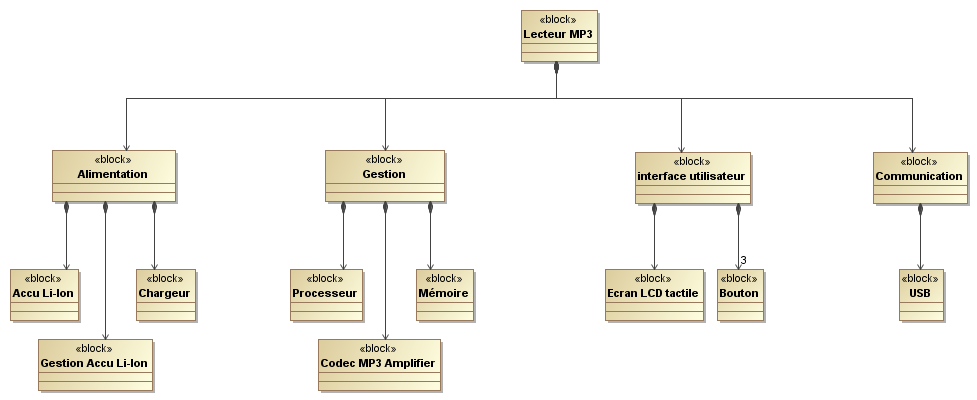

Description structurelle
Le langage sysML propose 2 diagrammes destinés à décrire la composition du système.
Le diagramme de définition des bocks (BDD)
Il répertorie les constituants du système ou d'un block en précisant éventuellement leur rôle et leur quantité. Chaque block peut faire l'objet d'une description plus précise en indiquant ses constituants, ses propriétés, les opérations qu'il peut effectuer ainsi que les contraintes ou limites auxquelles il est soumis. Exemple :

Diagramme de définition de blocks d'un lecteur MP3
Remarque : Dans le cas présent, Le lecteur MP3 dispose d'une interface utilisateur constituée d'un écran LCD tactile et de 3 boutons.
Le diagramme de block interne (IBD)
Il représente les liens, les flux et les informations échangées entre les part d'un block ou du système. Le cadre du diagramme représente le block lui même ou le système.

Diagramme de block interne du Block Alimentation (Lecteur MP3)
Remarque : les deux diagrammes doivent être cohérents (le bloc d'alimentation comprend 3 parties (blocks) que l'on retrouve dans le IBD de l'alimentation.
Created with the Personal Edition of HelpNDoc: Free help authoring environment